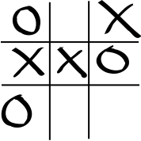

Reinforcement learning from the ground up | part 2: deep Q learning on tic-tac-toe.
posted on 2019-12-22T14:53:34Z · last modified on 2020-05-30T11:27:03Z · tags: machine-learning python reinforcement-learningPreviously, we saw that reinforcement learning worked quite well on tic-tac-toe. However, there's something unsatisfying about working with a Q-table storing all the possible states of the game. It feels like the Agent simply memorizes each state of the game and acts according to some memorized rules obtained by its huge amount of experience (remember that the Agent played 10,000,000 games during training). In this second part of the reinforcement learning series, we'll swap out the Q table for a neural network.

The AI created in this series can now be challenged here!
We'll use PyTorch to create and optimize the neural network, as its excellent compatibility with numpy allows us to swap out the Qtable for a deep Q network with minimal effort. Also, it's just the best deep-learning framework for python - no competition really.
#!
# standard library:
import json # to store learned state
# 3rd party:
import tqdm
import torch
import numpy as np
# settings
torch.manual_seed(0)
np.random.seed(2)
Q-model¶
The main difference with the previous part of the series is that we'll swap out the Q-table by a deep Q neural network model of 3 layers deep. OK, that's not very deep, but we'll stick with the buzzwords.
The goal of our QModel is to accurately approximate the values in the QTable. We could thus train the neural network on the values obtained in the previous part, but obviously that would defeat the purpose of using a neural network in the first place (as it requires you to find the underlying Qtable first).
We want the neural network to act as a proxy for the table. It also has to be able to approximate the QTable in cases it is completely unfeasible to find the underlying QTable.
The QModel defined below expects the full game state (2D game state and the turn). The 2D state will be flattened and concatenated with the turn index. This concatenated state of length 10 with three kinds of states per cell (1, 2 or 0) is then embedded in a three dimensional embedding space. Next, the embedded game state is sent through 3 neural network layers with ReLU activation.
Note that in this case, the turn index is used to make a prediction. This is in contrast with the Q-table case, where just the 2D state was used. The reason for this is that in this case we work with a neural network for which the predicted Q-values are note completely independent for each state given. We thus want to give as much information to the network as possible and let the network itself figure out which information it uses.
Apart from the network definition, we also created some save and load methods to save the weights of the network as json.
class QModel(torch.nn.Module):
def __init__(self):
super().__init__()
self.embedding = torch.nn.Embedding(3, 3)
self.layer1 = torch.nn.Linear(30, 300)
self.layer2 = torch.nn.Linear(300, 300)
self.layer3 = torch.nn.Linear(300, 9)
self.relu = torch.nn.ReLU()
def forward(self, states2d, turns):
if not torch.is_tensor(states2d):
states2d = torch.from_numpy(states2d)
if not torch.is_tensor(turns):
turns = torch.from_numpy(turns)
assert states2d.dim() == 3 # batch dimension required
assert turns.dim() == 1 # only dim = batch dim
x = torch.cat([states2d.flatten(1), turns[:,None]], 1)
x = self.relu(self.embedding(x)).flatten(1)
x = self.relu(self.layer1(x))
x = self.relu(self.layer2(x))
x = self.layer3(x)
return x
def _serialize_tensor(self, tensor):
if tensor.dim() == 0:
return float(tensor)
return [self._serialize_tensor(t) for t in tensor]
def _deserialize_tensor(self, tensor):
return torch.tensor(tensor, dtype=torch.get_default_dtype())
def save(self, filename):
if not filename.endswith(".json"):
filename += ".json"
with open(filename, "w") as file:
json.dump(
{k: self._serialize_tensor(t) for k, t in self.state_dict().items()},
file,
)
def load(self, filename):
if not filename.endswith(".json"):
filename += ".json"
with open(filename, "r") as file:
self.load_state_dict(
{k: self._deserialize_tensor(t) for k, t in json.load(file).items()}
)
return self
The Game¶
In the previous part, we assumed the Agent learned after every turn played. This form of online learning worked well for a Q-table, as each state has an independent row of qvalues associated with it.
Unfortunaty, when using a neural network, predicted Q values will not be completely independent for each different state. This is a good thing, as it allows the neural network to generalize and invoke similar behavior for similar states.
However, it also makes the training process less stable. To be able to stabilize the training, we'll have to batch several transitions - (state, action, next_state, reward) sequences - between states together.
Then, after a few games are played, all transitions are batched together and the Agent can learn from each transition in the batch simultaneously.
Let's see how we can implement this:
class TicTacToe:
""" Tic-Tac-Toe Game """
def __init__(self, player1, player2):
""" The Tic-Tac-Toe game takes two players and pitches them against each other. """
# pitch players against each other
self.players = {1: player1, 2: player2}
# reward for each outcome of the game (tie, player1 wins, player2 wins)
self._reward = {0: 0, 1: 1, 2: -1}
def play(self, num_games=1, visualize=False):
""" play several full games """
transitions = []
for _ in range(num_games):
turn = 1
state2d = np.zeros((3,3), dtype=np.int64)
state = (state2d, turn) # full state of the game
for i in range(9):
current_player = self.players[turn]
action = current_player.get_action(state)
next_state, reward = self.play_turn(state, action)
transitions.append(
(state, action, next_state, reward)
)
if visualize:
self.visualize_state(next_state, turn)
(state2d, turn) = state = next_state
if turn == 0:
break
return transitions
def play_turn(self, state, action):
""" execute a specific move chosen by the current player and
check if it's a winning/losing move. """
# retrieve states
state2d, turn = state
next_state2d = state2d.copy()
next_turn = turn % 2 + 1
# transform action in two indices
ax, ay = action // 3, action % 3
# check if board is already occupied at location
if state2d[ax, ay] != 0: # invalid move
next_state2d.fill(0)
next_state = (next_state2d, 0) # next_turn == 0 -> game over
return next_state, self._reward[next_turn] # next player wins
# apply action
next_state2d[ax, ay] = turn
# check if the action resulted in a winner
mask = next_state2d == turn
if (
(mask[0, 0] and mask[1, 1] and mask[2, 2])
or (mask[0, 2] and mask[1, 1] and mask[2, 0])
or (mask[0, 0] and mask[0, 1] and mask[0, 2])
or (mask[1, 0] and mask[1, 1] and mask[1, 2])
or (mask[2, 0] and mask[2, 1] and mask[2, 2])
or (mask[0, 0] and mask[1, 0] and mask[2, 0])
or (mask[0, 1] and mask[1, 1] and mask[2, 1])
or (mask[0, 2] and mask[1, 2] and mask[2, 2])
):
next_state = (next_state2d, 0) # next_turn == 0 -> game over
return next_state, self._reward[turn] # current player wins
# if the playing board is full, but no winner found: tie
if (next_state2d != 0).all(): # final tie.
next_state = (next_state2d, 0) # next_turn == 0 -> game over
return next_state, self._reward[0] # no winner
# if no move has resulted in a winner: next player's turn.
next_state = (next_state2d, next_turn)
return next_state, self._reward[0] # no winner yet
@staticmethod
def visualize_state(next_state, turn):
""" show the resulting game state after a player's turn """
next_state2d, next_turn = next_state
print(f"player {turn}'s turn:")
if (next_state2d == 0).all() and turn == 0:
print("[invalid state]\n\n")
else:
print(
str(next_state2d)
.replace("[[", "")
.replace(" [", "")
.replace("]]", "")
.replace("]", "")
.replace("0", ".")
.replace("1", "O")
.replace("2", "X")
+ "\n\n"
)
Deep QAgent¶

Finally, we have to adapt the Agent to
- Use the
QModelin stead of theQTable - Learn from multiple transitions at once instead of a single one.
One of the main observations used to be able to learn from a batch of transitions at once is the observation that:
\begin{align*} \rm argmin(\texttt{values}) = argmax(-\texttt{values}) \end{align*}and
\begin{align*} \rm min(\texttt{values}) = -max(-\texttt{values}) \end{align*}This allows us to unify the policies for player1 and player2 in a single policy which depends on the parity s of your turn (+1 for player 1, -1 for player 2):
This same trick can also be used to calculate the error δ between the expected qvalues and the discounted future qvalues: \begin{align*} \delta &= Q(\texttt{state},~\texttt{action}) - (\texttt{reward} + s \cdot \texttt{discount_factor} \cdot \text{max}_{\texttt{action}} \left( s \cdot Q(\texttt{next-state},~\texttt{action})) \right) \end{align*}
Unfortunately, this error can not be used explicitly anymore for updating the qtable. In stead, we use PyTorch's Adam optimizer to minimize the Huber Loss, which is defined as:
\begin{align*} \begin{split}\quad \mathcal{L}(\delta) = \begin{cases} \frac{1}{2}{\delta^2} & \text{for } |\delta| \le 1, \\ |\delta| - \frac{1}{2} & \text{otherwise.} \end{cases}\end{split} \end{align*}The Huber loss acts like the mean squared error when the error is small, but like the mean absolute error when the error is large. This makes it more robust to outliers when the estimates of Q are very noisy - which is very often the case with reinforcement learning.
class Agent:
""" The Agent plays the game by playing a move corresponding to the optimal Q-value """
def __init__(
self, qmodel=None, epsilon=0.2, learning_rate=0.01, discount_factor=0.9
):
""" A new Agent can be given some optional parameters to tune how fast it learns
Args:
qmodel: QModel=None: the initial Q-table to start with.
epsilon: float=0.2: the chance the Agent will explore a random move
(in stead of choosing the optimal choice according to the Q table)
learning_rate: float=0.3: the rate at which the Agent learns from its games
discount_factor: float=0.9: the rate at which the final reward gets discounted
for when rating previous moves.
"""
self.qmodel = QModel() if qmodel is None else qmodel
# the speed at which the Qvalues get updated
self.learning_rate = learning_rate
# pytorch optimizer to update the weights of the QModel
self._optimizer = torch.optim.Adam(self.qmodel.parameters(), lr=learning_rate)
# the discount factor of future rewards
self.discount_factor = discount_factor
# the chance of executing a random action
self.epsilon = epsilon
def random_action(self):
""" get a random action chosen from the allowed actions to take """
return int(np.random.randint(0, 9, 1, dtype=np.int64))
def best_action(self, state):
""" get the best values according to the current Q table """
with torch.no_grad():
state2d, turn = state
sign = np.float64(1 - 2 * (turn - 1))
turns = torch.tensor(turn, dtype=torch.int64)[None] # batch dim required
states2d = torch.tensor(state2d, dtype=torch.int64)[None]
qvalues = self.qmodel(states2d, turns)[0]
return np.argmax(sign * qvalues)
def get_action(self, state):
""" perform an action according to the state on the game board """
if np.random.rand() < self.epsilon:
# Choose action (random with chance of epsilon; best action otherwise.)
action = self.random_action()
else:
# get qvalues for current state of the game
action = self.best_action(state)
return action
def learn(self, transitions):
""" learn from the current state and action taken. """
states, actions, next_states, rewards = zip(*transitions)
states2d, turns = zip(*states)
next_states2d, next_turns = zip(*next_states)
turns = torch.tensor(turns, dtype=torch.int64)
next_turns = torch.tensor(next_turns, dtype=torch.int64)
states2d = torch.tensor(states2d, dtype=torch.int64)
next_states2d = torch.tensor(next_states2d, dtype=torch.int64)
actions = torch.tensor(actions, dtype=torch.int64)
rewards = torch.tensor(rewards, dtype=torch.float32)
with torch.no_grad():
# get qvalues for current state of the game
mask = (next_turns > 0).float() # wether the game is over or not
signs = (1 - 2 * (next_turns - 1)).float()
next_qvalues = self.qmodel(next_states2d, next_turns)
expected_qvalues_for_actions = rewards + mask * signs * (
self.discount_factor * torch.max(signs[:, None] * next_qvalues, 1)[0]
)
# update qvalues:
qvalues_for_actions = torch.gather(
self.qmodel(states2d, turns), dim=1, index=actions[:, None]
).view(-1)
loss = torch.nn.functional.smooth_l1_loss(
qvalues_for_actions, expected_qvalues_for_actions
)
self._optimizer.zero_grad()
loss.backward()
self._optimizer.step()
return loss.item()

# initialize
np.random.seed(3)
torch.manual_seed(1)
total_number_of_games = 15_000_000 # 15_000_000
number_of_games_per_batch = 1000
player = Agent(epsilon=0.7, learning_rate=0.01) # 0.7 0.01
game = TicTacToe(player, player)
min_loss = np.inf
range_ = tqdm.trange(total_number_of_games // number_of_games_per_batch)
for i in range_:
transitions = game.play(num_games=number_of_games_per_batch)
np.random.shuffle(transitions)
loss = player.learn(transitions)
if loss < min_loss and loss < 0.01:
min_loss = loss
range_.set_postfix(loss=loss, min_loss=min_loss)
player.qmodel.save("qmodel.json")
Let's play another game!¶
Let the trained agent play against itself one final time.
player = Agent(epsilon=0.0) # epsilon=0 -> no random guesses
game = TicTacToe(player, player)
player.qmodel.load("qmodel.json")
# play
game.play(num_games=1, visualize=True);
We see that the game also ends in a tie, providing some evidence that the Agent is as good as the one we made in the previous post.
The Q-model for the trained Agent can be downloaded in json format here (availability not guarenteed).